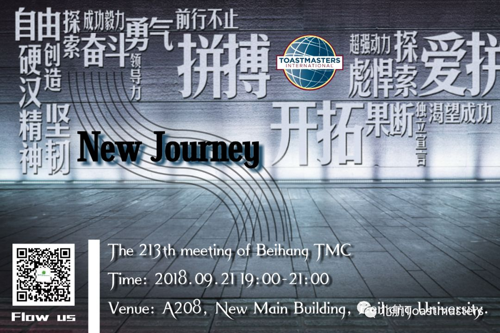
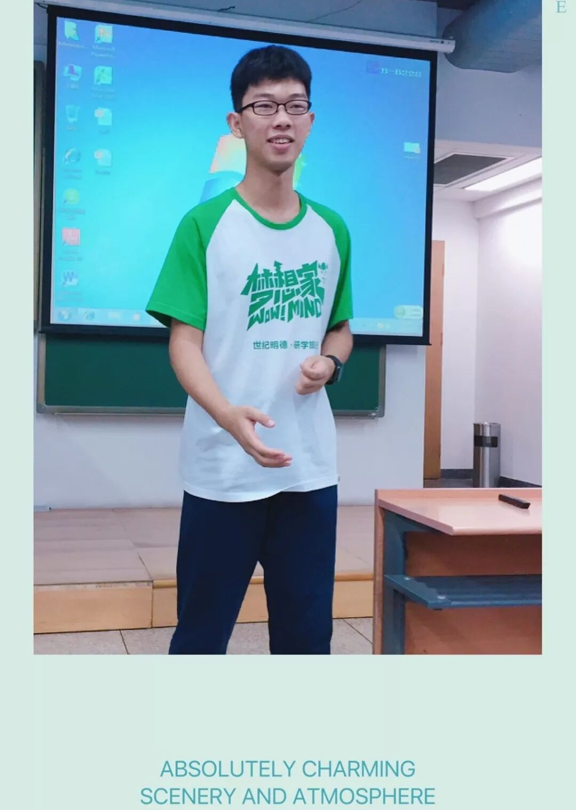
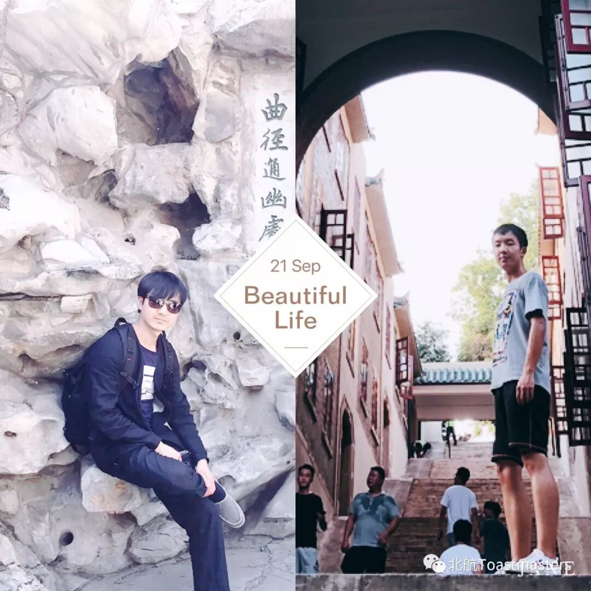
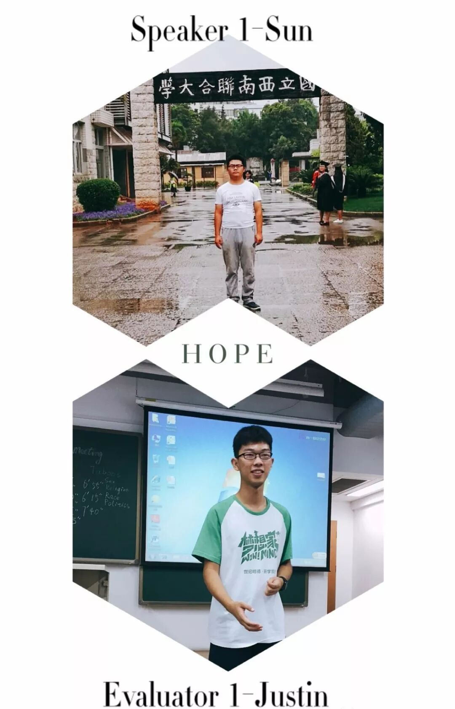
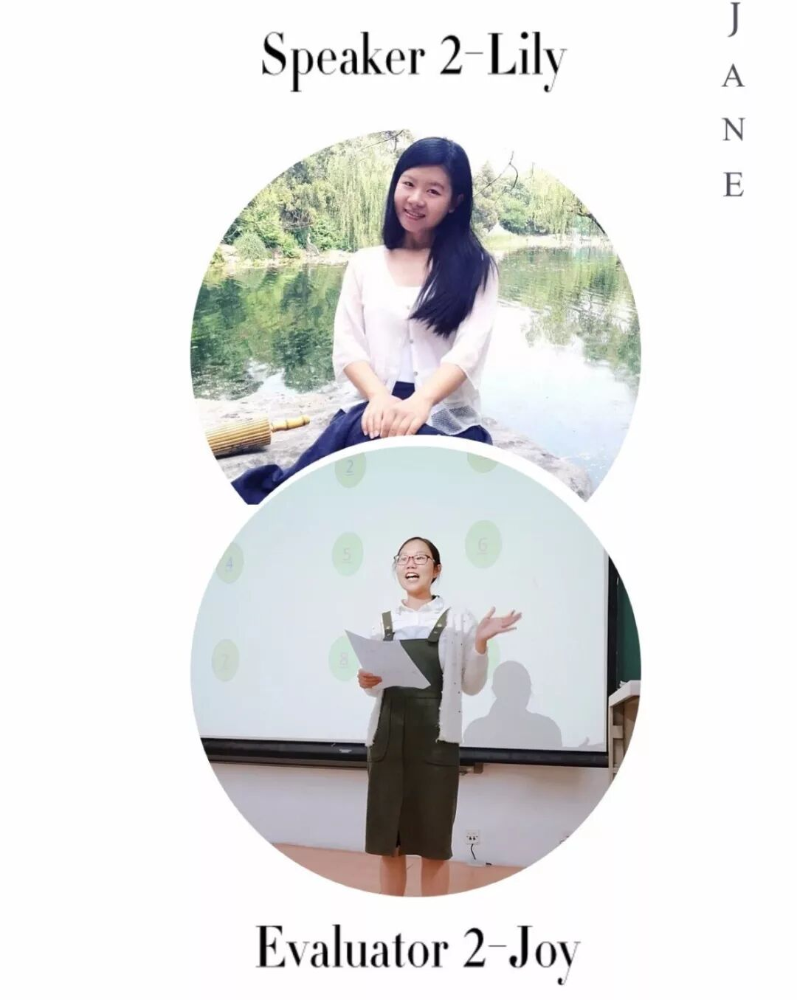
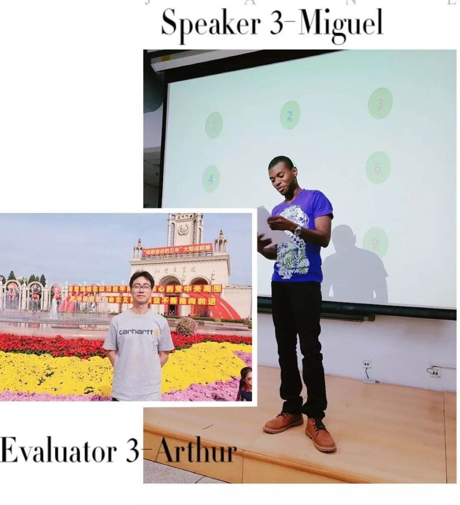
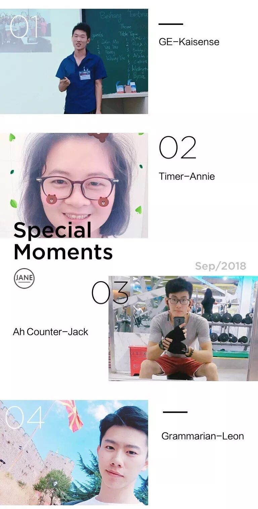
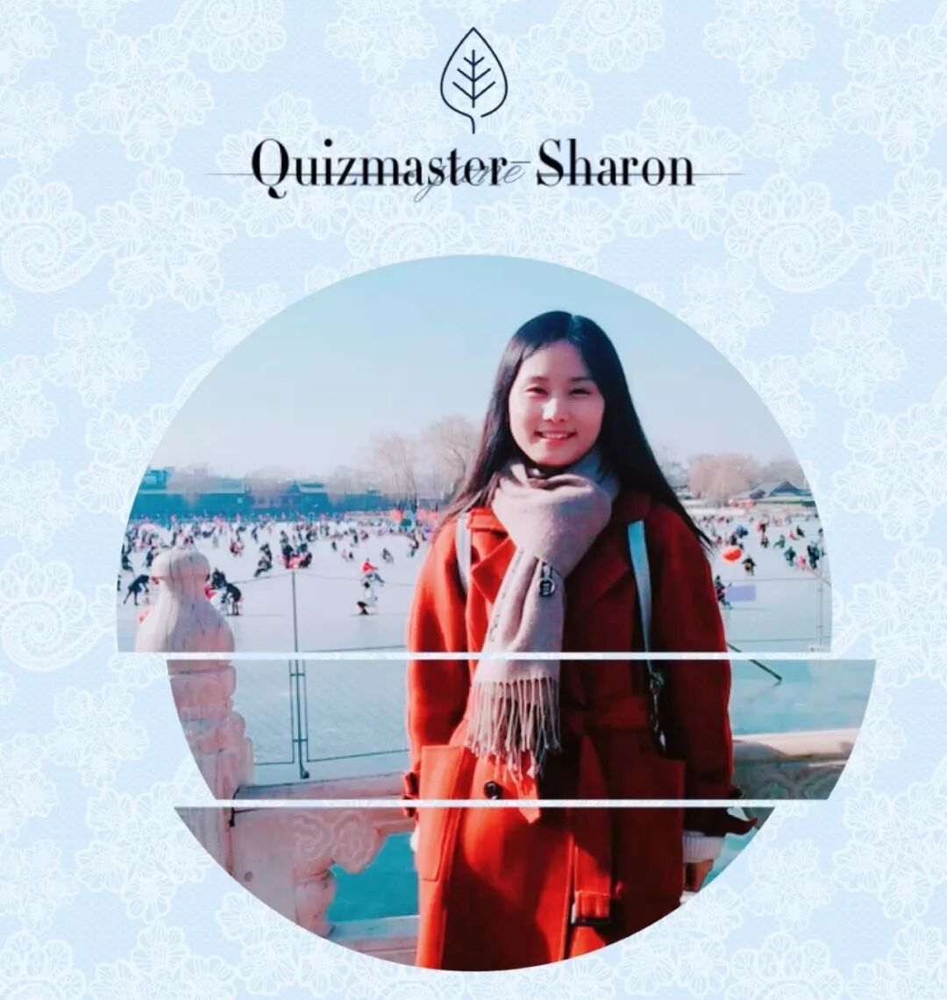

TM-Justin

Table Topic Session
TTM-Michael
TTE-Wicher

Prepared Speech Session



Evaluation Team

Quiz Master-Sharon


Time: 19:00-21:00, Friday, 21st September
Venue: Room A208, New Main Building, Beihang University
Beihang Toastmasters Club is a students' union.
At the same time, we belong to a non-profit international organization called Toastmasters International.
Toastmasters International (TI) is a non-profit educational organization that operates clubs worldwide for the purpose of helping members improve their communication, public speaking, and leadership skills. You can find us by the following map of Beihang University.

原文链接（公众号关闭后可能失效）：
https://mp.weixin.qq.com/s/hxbY_R7_l2Be32M0Zgy4gw
https://mp.weixin.qq.com/s/hxbY_R7_l2Be32M0Zgy4gw
第 489/539 篇 · 北航Toastmasters英文演讲俱乐部公众号存档
本页为抢救式本地归档，图文已永久保存。
本页为抢救式本地归档，图文已永久保存。